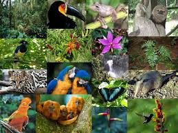

Pagina principal
Plantas en Honduras
Parque nacional la tigra
Biosfera del rio Platano

Animales en Honduras
La flora de Honduras es muy variada, la selva lluviosa o pluviselva, también clasificado como Bosque lluvioso tropical, es una de las más impresionantes como formación vegetal; los ecólogos la denominan "Formación Higrófila Megatérmica", por corresponder a regiones de gran humedad y constantes temperaturas altas. En los cuales hay una especie dominante única, como pinos o abetos, cubriendo grandes áreas. La zona oriental del país "La Mosquitia". Existe una gran abundancia de plantas trepadoras o enredaderas, como las lianas. Gran variedad de epifitas, siendo las orquídeas más llamativas. Por su adaptación a la humedad ambiente, los árboles son enormes y no poseen raíces profundas sosteniéndose gracias a los grandes contrafuertes o espolones, mientras las hojas son muchas y de gran tamaño. Los troncos de los árboles son rectos y lisos y sus primeras ramas nacen a gran altura del suelo. La Pluvioselva de Honduras corresponde a la región norte por debajo de los 600 metros de elevación; no hay estación seca completamente definida y abarca un 29% del total de la superficie del país. Entre las especies vegetales más típicas de esta región biogeográfica se encuentran: cedro Real (Cedrela mexicana), Cedro Común (Cedrela odorata), caoba (Swetonia mahogoni L.), árbol de María (Calophyllum brasiliense), Cortés (Tabebuia guayacan), "Espavel" o Mijao (Anacardium excelsum), guayabo (Guayabón) o (Tarminalia amazonia), y muchos otros. Existen numerosas palmeras cerca de las costas, la fruta es tropical y las flores de todos los colores. Es muy común encontrar plantas textiles como el algodón o la pacaya. También hay gran variedad de plantas medicinales como la achicoria, el apazote y el Bálsamo de Tolú. Se utilizan como árboles productores de goma (Ficus elastica) y resina, el espino blanco y el palmacristi (Ricinus communis)
